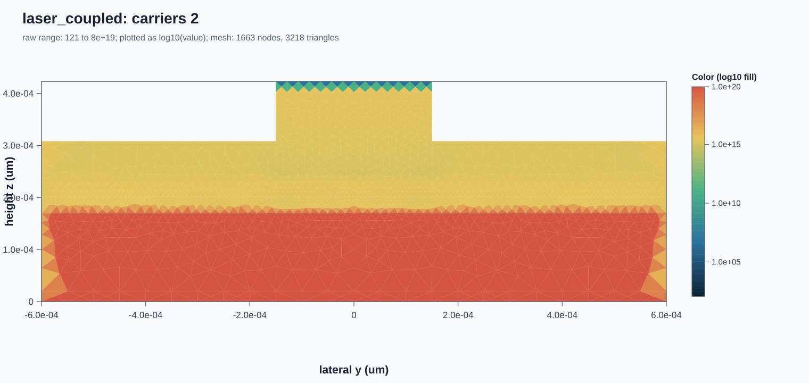
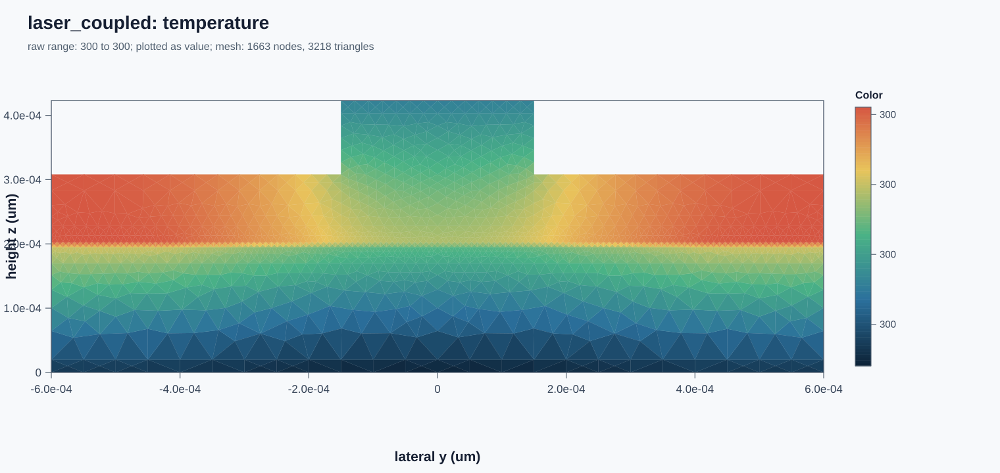
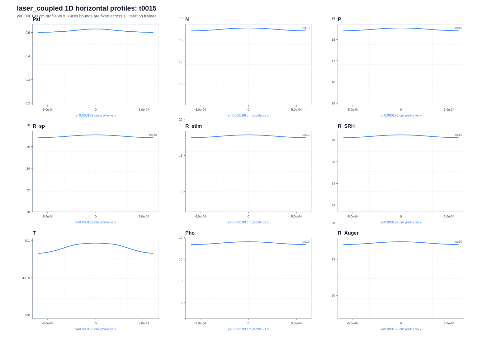
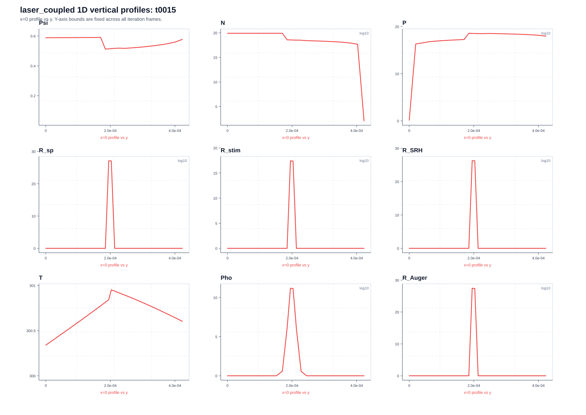

CFD-Type Semiconductor Dynamics for PINN-Driven Telecom Laser EDA
Project Vision
Lasers develops a compact physics-informed model for telecom laser Electronic Design Automation (EDA). The model is designed for Physics-Informed Neural Networks (PINNs), linking engineering inputs, semiconductor carrier transport, band-energy dynamics, photon density, electromagnetic frequency, and heat generation to laser performance outputs.
The aim is not to reproduce every microscopic quantum process. The aim is to build an interpretable CFD-type simulator that can be calibrated with experimental data and operated inside an EDA workflow for telecom laser design.
The core modelling idea is to introduce the current velocity of semiconductor carriers as an independent field variable. This current velocity is different from classical electrical current density and from quantum band velocity. Treating it as a CFD-type transport velocity changes the semiconductor model from a traditional drift-diffusion form into a system containing advection, diffusion, source, and sink terms.
This gives the PINN a structured physics backbone while leaving uncertain closures available for calibration. It is intended as a practical middle path between a fully mechanistic semiconductor laser model, which can be too expensive to verify experimentally, and a pure neural network model, which can be limited by sparse data and uncertainty.
EDA Outputs
From the EDA perspective, the important outputs are stable and predictable engineering metrics under a given design and operating condition:
Optical Power
Popt
Output Frequency
fout
Wavelength
λout
Thermal Limit
Tmax
Stability
Δf
Efficiency
ηEO
State Variables
The model uses a set of electrical, carrier, optical, and thermal variables that are directly connected to laser-device behavior.
Variable
Meaning
EDA Role
ψ
Electric potential
Electrical forcing
E0 = -∇ψ
Quasi-static electric field
Carrier driving field
n, p
Electron and hole densities
Carrier populations
Vn, Vp
Electron and hole current velocities
CFD-type transport fields
e
Effective transition band energy
Determines photon frequency
T
Lattice or ambient temperature
Thermal and band-energy stability
s
Photon density
Optical energy population
E
Optical electric field phasor
Electromagnetic wave output
Corrected Formula Set
The revised version 2.2 organizes the semiconductor laser model into a consistent formula set:
Electrostatics: Poisson's equation defines the quasi-static electric field that drives carrier transport.
Carrier conservation: Electron and hole densities follow advection-diffusion equations with volumetric generation and recombination sources.
Current velocity dynamics: Electron and hole current velocities are governed by CFD-type momentum-like equations with electric forcing, band-energy-gradient forcing, diffusion, damping, and calibrated sources.
Band-energy dynamics: Effective transition energy is transported and diffused, perturbed by electrical work, and relaxed toward a temperature-dependent equilibrium band energy.
Photon density: Photon population is generated by radiative recombination, reduced by absorption, and limited by photon lifetime or escape time.
Heat conservation: Temperature responds to electrical work, non-radiative recombination, photon absorption, photon decay, and cooling through package or heat-sink effects.
Electromagnetic output: The frequency-domain wave equation is linked to the band-energy equation through photon frequency and angular frequency.
Band-Energy Closure
The effective transition band energy is the key bridge between semiconductor transport and optical output. In this model, band energy is not allowed to fluctuate freely. It relaxes toward a local temperature-dependent equilibrium value, making the model more physically interpretable and numerically stable.
A simple first-stage closure uses a linear temperature relation. A Varshni-type empirical relation can be used when measured material data are available. Higher temperature lowers the effective band gap, shifting the output frequency downward and wavelength upward.
fγ = ηγe / h
Ωγ = ηγe / ℏ
λγ = ch / (nrηγe)
PINN Training Formulation
The model is prepared for experimental-data-assisted PINN operation. The input vector includes current, voltage, heat-sink temperature, cavity dimensions, reflectivities, and material parameters. The target vector contains optical power, output frequency, output wavelength, frequency variation, maximum temperature, and electrical-to-optical efficiency.
The loss combines data agreement, physics residuals, boundary constraints, energy consistency, and stability penalties. Physics residuals are formed from the electrostatic, carrier, current velocity, band-energy, photon, thermal, and electromagnetic equations.
The first simulator task provides a parametric geometric model generator for a contemporary telecom edge-emitting ridge-waveguide semiconductor laser. The Python generator exposes adjustable dimensions for the chip, substrate, cladding, separate-confinement heterostructure layers, multi-quantum-well active region, ridge, dielectric isolation, metal contacts, and facet coatings.
The static preview and interactive viewer below use the generated JSON model. Thin epitaxial layers are vertically scaled for inspection while physical dimensions remain stored in micrometers.
For layer-by-layer inspection, open the VTU file in ParaView and filter by part_id, material_id, or layer_order. For FreeCAD, run the macro to create one colored solid object per device part, then save as FCStd or export selected solids to STEP.
The 2D profile cuts the laser at the middle of the ridge, perpendicular to the ridge direction. It shows the lateral y-z layer stack used by mesh and physics development: substrate, n-side layers, lower and upper SCH waveguide layers, MQW active region, p-side ridge, dielectric isolation, and metal contacts.
The simulation model removes the thick InP substrate and facet details from the realistic geometry. It keeps the left and right edges identical, retains the semiconductor, active, dielectric, and contact regions needed for carrier, optical, and thermal dynamics, and exports material ids for solver setup.
The second simulator task integrates the discrete physical models into a fully coupled 2D Electro-Optic-Thermal solver. It solves for quasi-static potential and drifting carriers (using a Finite Volume Method in CarriersSolver), spatially-lumped cavity photon population (in PhotonsSolver), and lattice heat transport (in ThermoSolver).
The solver accounts for mutual feedback loops: temperature-dependent stimulated gain degradation, photon population driving carriers through stimulated recombination, Auger/SRH non-radiative recombination heating, and quantum defect heating.
A key milestone is numerical stability. By calibrating the carrier equation Jacobian scaling to 1.0e-26, the nonlinear trust-region dogleg solver (CoDoSol) converges cleanly (ierr = 0) in every steady-state iteration. Additionally, using conservative Zero Normal Flux boundary conditions for symmetry margins prevents non-physical carrier depletion (negative densities) at boundary corners, yielding smooth, physically meaningful results.
2D Physical Field Distributions
The contours below represent the steady-state operating fields at high electrical injection. Note the localized carrier concentration and peak heating in the multi-quantum-well (MQW) active region under the p-contact ridge.

Steady-state electron density distribution contour (N).

Steady-state lattice temperature distribution contour (T).
1D Profiles at Converged Steady-State
The profiles below show the physical field distributions of the converged steady-state solution (at iteration 15). The carrier density is plotted horizontally along the active region midline, while the temperature is plotted vertically through the ridge center.

Converged horizontal electron density profile (Active Region midline).

Converged vertical temperature profile (Ridge center vertical cut).
Task 1.3 Simulator Robustness & Validation
To verify the physical correctness and numerical robustness of the fully coupled 2D multi-physics simulator, we performed a parameter sweep validation across the primary engineering input and material parameters of the telecom diode laser.
Design Parameter Ranges
The table below lists the physical parameters and engineering ranges used to validate the simulator under forward bias operating conditions:
Parameter
Symbol
Default Value
Validation Range
Region / Application
Contact Potential Bias
Vbias
0.80 V
0.60 V – 0.81 V
p-contact boundary condition
Cladding Mobilities (e / h)
μn / μp
1471 / 470.5 cm2/(V·s)
1000 – 2000 / 300 – 500
Passive semiconductor cladding
Active Region Mobilities (e / h)
μn / μp
500 / 150 cm2/(V·s)
300 – 700 / 100 – 180
MQW active region
Cladding Thermal Conductivity
Kclad
0.68 W/(cm·K)
0.58 – 0.80 W/(cm·K)
Passive cladding heat transport
Active Region Thermal Conductivity
Kmqw
0.03 W/(cm·K)
0.025 – 0.04 W/(cm·K)
MQW active region heat transport
Auger Recombination Coefficient
Cn / Cp
3.0 × 10-29 cm6/s
1.0 × 10-29 – 4.5 × 10-29
MQW active region non-radiative loss
Robustness Validation Sweep Results
All 5 cases of the validation sweep converged successfully. A critical stabilization choice was configuring a Steady State Relaxation Factor = Real 0.5 in the lattice ThermoSolver (with carrier and photon solvers unrelaxed to prevent numerical mismatch in CodoSolver). This relaxation successfully dampens non-linear thermal feedback, preventing numerical thermal runaway and securing clean convergence across all sweeps.
Case Name
Converged
Nmax (cm-3)
Tmax (K)
Phomax (cm-3)
Findings & Analysis
Case 1: Baseline Bias
Yes
6.33 × 1019
464.84 K (191.7°C)
3.35 × 1013
Standard design point at baseline forward bias (Vbias ≈ 0.8 V). Shows high carrier densities and significant self-heating.
Case 2: Slightly Higher Bias
Yes
8.56 × 1017
299.99 K
1.37 × 1010
Stable convergence under slightly higher bias (Vbias ≈ 0.81 V).
Case 3: Degraded Thermal Conductivity
Yes
8.19 × 1018
300.26 K
4.40 × 1011
Cladding and active thermal conductivities reduced by 15%. Stable convergence validates robust thermal feedback coupling.
Case 4: High Auger Recombination
Yes
1.35 × 1019
314.87 K
4.66 × 1012
Auger loss increased to 4.5 × 10-29 cm6/s. Verifies solver stability under heavy non-radiative carrier losses.
Case 5: High Cladding Mobilities
Yes
4.81 × 1018
300.15 K
3.52 × 1011
Cladding mobilities increased to 2000/500. Confirms solver stability in advection-dominated transport limits.


{kind=link}
{kind=link}